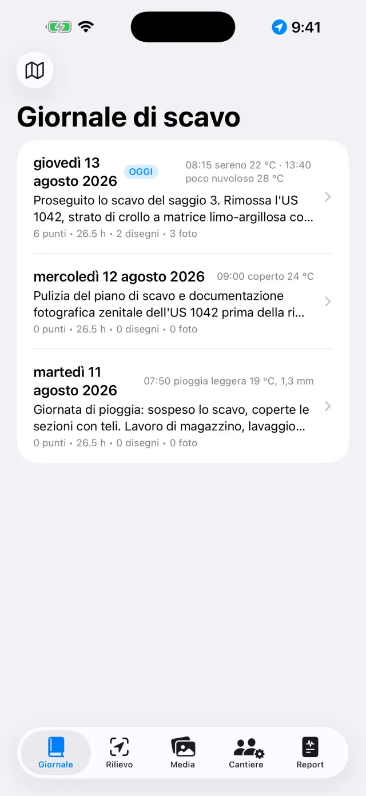
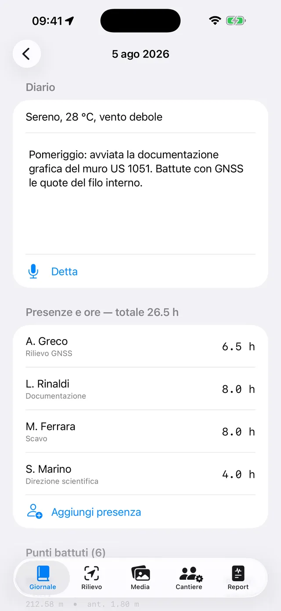
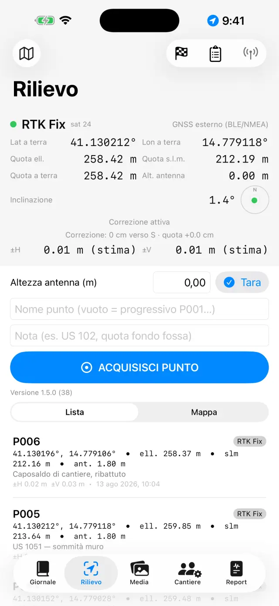
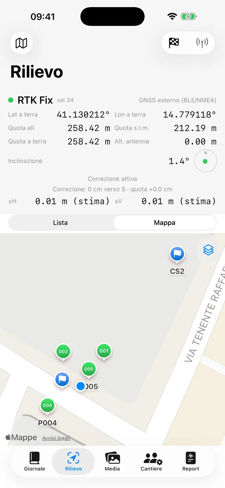
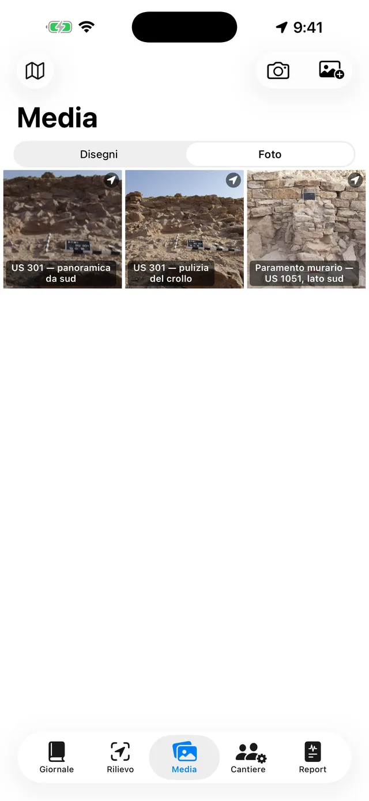
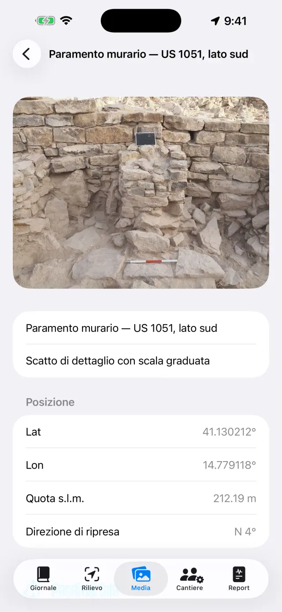
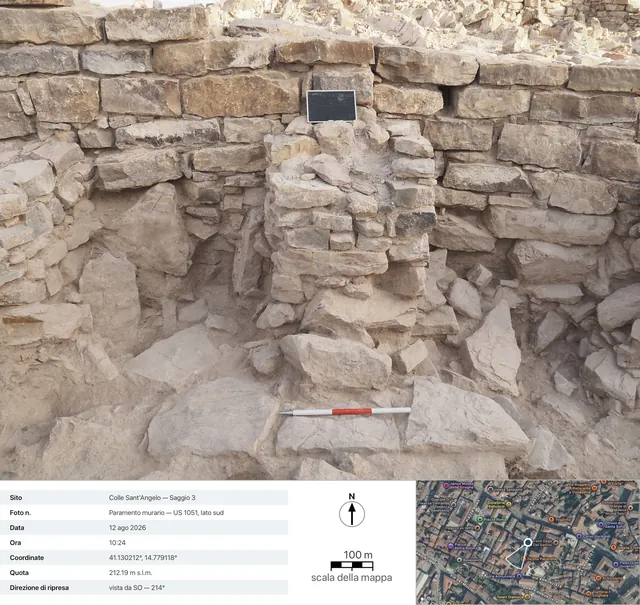
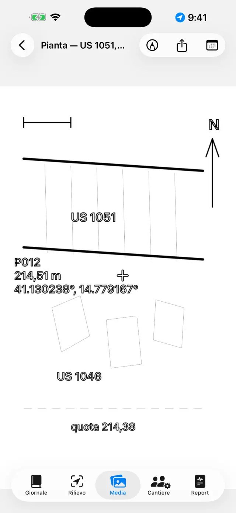
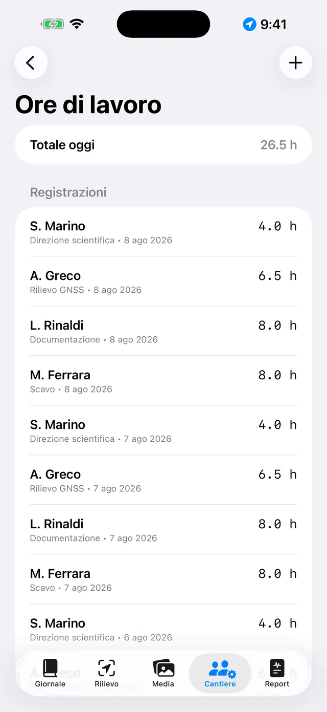
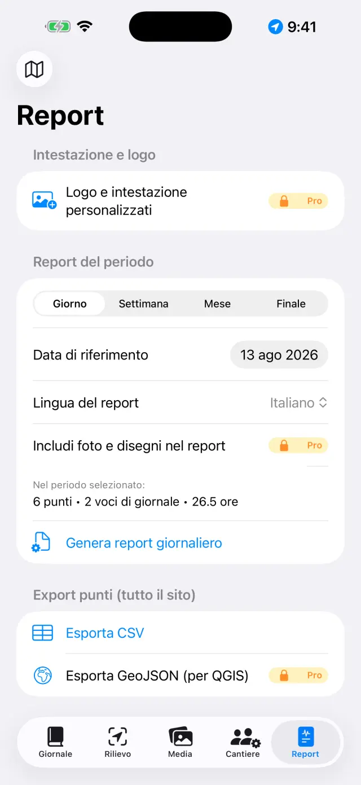

Il diario di scavo digitale per iPhone e iPad. 100% offline: i tuoi dati restano sul dispositivo.
In due parole
L'idea è una sola: ogni giornata di scavo è una pagina che si
compila da sola. Tu registri le cose dove capita — un punto GNSS nel Rilievo, una
foto nei Media, le ore nel Cantiere — e la pagina del giorno nel
Giornale le raccoglie tutte automaticamente. A fine settimana o a fine
scavo, i report si generano da soli a partire dalle pagine.
La giornata tipo
MattinaApri la pagina del giorno, annota meteo e diario (anche a voce con Detta)
PresenzeNel Cantiere registra chi c'è e le ore
RilievoAcquisisci i punti GNSS; verifica un caposaldo se usi l'RTK
FotoScatta dai Media: le coordinate si agganciano da sole
DisegniRicalca la sezione o la pianta su una foto («lucido»)
SeraDal tab Report genera il giornaliero: PDF pronto da inviare
Primi passi
Al primo avvio trovi già un sito di esempio. Per crearne uno tuo tocca il
nome del sito in alto (icona 🗺) → Nuovo sito… e dagli un
nome (es. «Colle Sant'Angelo — Saggio 3»).
Il nome del sito attivo è sempre visibile in alto: tutte le schede mostrano
i dati di quel sito. Per cambiare sito, tocca di nuovo il nome: l'elenco è
sotto il titolo «I tuoi siti», e con Rinomina sito… correggi un nome
senza perdere niente.
Concedi i permessi quando richiesti: posizione (per i punti),
fotocamera (per le foto), microfono (per la dettatura),
Bluetooth (solo se usi un ricevitore esterno).
Le cinque schede
📓 Giornale
Tocca una giornata per aprire la sua pagina: diario, meteo, presenze, punti,
foto e disegni del giorno sono già lì.
Scrivi il diario o tocca Detta e parla: la trascrizione avviene
sul dispositivo, funziona anche senza rete.
Il meteo si scrive a mano (es. «Sereno, 28 °C, vento leggero») oppure si
rileva con Rileva, che chiede le condizioni del momento al servizio
meteorologico norvegese. Serve la rete e vale solo per la giornata di oggi: il
tempo di ieri non è più recuperabile. Un secondo tocco nel pomeriggio aggiunge
una misura. Quello che scrivi a mano vince sempre.
Rilevando, all'esterno va solo la posizione della zona arrotondata a circa
11 metri, e nei report la riga esce nella lingua del report.

L'elenco delle giornate

La pagina di una giornata
📍 Rilievo
Il pannello in alto mostra la posizione live: coordinate, quote, precisione
e tipo di fix (GPS / RTK Float / RTK Fix).
Se usi un'asta, imposta l'Altezza antenna (m): la quota del punto
viene ridotta a terra automaticamente.
Tocca Acquisisci punto. Il nome è progressivo (P001, P002…), ma
puoi digitarne uno tuo (es. «US 102 — quota fondo») e aggiungere una nota.
Passa da Lista a Mappa per vedere i punti sul posto;
dalla mappa puoi attivare il catasto o un altro servizio WMS.
I capisaldi (🏁) vivono nella loro sezione: importali da CSV o creali, poi
usa la Verifica per controllare gli scarti ΔN/ΔE/ΔQ in tempo reale
prima di rilevare.
Il Libretto delle livellazioni è il libretto di campagna per il
livello ottico: stazioni, letture indietro e avanti, quote calcolate da un
caposaldo di partenza, con il controllo di chiusura. I punti livellati entrano
nel sito con la loro quota, come quelli GNSS.

Il pannello GNSS del Rilievo

Punti e capisaldi sulla mappa
Ogni punto salva entrambe le quote: ellissoidica
e ortometrica (s.l.m.). Col GPS interno del telefono la quota s.l.m. può non
essere disponibile: serve un ricevitore esterno (vedi sotto).
📷 Media
Scatta con il pulsante fotocamera o importa dal rullino.
Le foto prendono nome progressivo (F001, F002…) e vengono georeferenziate
con l'ultima posizione GNSS disponibile.
Allo scatto l'app registra anche la direzione di ripresa
dalla bussola: nel dettaglio della foto e nei report leggi «vista da SO — 214°»,
e per gli scatti a piombo (pianta, fondo di una US) la dicitura zenitale con la
direzione del bordo alto. Se la bussola è disturbata, l'app lo dice.
Tocca una foto per titolo e note (es. «US 102 da nord»).
Condividi schedaPRO genera la
scheda fotografica di documentazione: la foto con sotto i dati
di scatto (sito, numero, data e ora, coordinate, quota, direzione), una vista
satellitare con il segnaposto e il cono di ripresa, la barra della scala della
mappa e la freccia del nord. La mappa richiede la rete: senza, la scheda esce
comunque, con il pannello dati allargato.

La galleria delle foto

Il dettaglio di una foto: coordinate, quota e direzione di ripresa

La scheda esportata: i dati di scatto, la vista satellitare con il cono di ripresa, la scala della mappa e la freccia del nord
✏️ Disegni (nei Media)
Crea una nuova tavola e scegli una foto del sito come sfondo: è il tuo
«lucido» digitale. Un disegno può proseguire su più giornate.
Ricalca strati, tagli e pietre con il dito o con la Apple Pencil; regola
l'opacità della foto per vedere meglio il tratto. Pizzica per
zoomare (fino a 6×, doppio tocco a due dita per tornare a 1×).
Il Ricalco automaticoPRO riconosce il
contorno dell'oggetto che tocchi (una pietra, il limite di uno strato) e lo
trasforma in tratto: colore e spessore si cambiano senza uscire dalla
modalità. Tutto avviene sul dispositivo, senza rete.
Aggiungi caselle di testo per le etichette (es. «US 1002»): si spostano,
si ridimensionano col pizzico e hanno quattro caratteri tra cui scegliere.
Con lo strumento Scala (righello) tocchi i due estremi di una
misura nota — un segmento della palina — e scrivi la distanza vera: la foto
acquisisce la scala, e da lì in poi le esportazioni parlano in metri.
Con Punto quotato metti sulla foto la crocetta di un punto GNSS
del sito (o un punto scritto a mano): nome, quota e coordinate compaiono in
un'etichetta trascinabile con la lineetta di richiamo.
Esporta con legendaPRO: l'immagine
esce con una fascia bianca sotto — barra metrica (se la scala c'è), freccia
del nord per le foto scattate a piombo, «vista da» per le frontali.
Esporta vettorialePRO: SVG per il
disegno, oppure DXF per il GIS. Con almeno due punti quotati
con coordinate su una foto a piombo, il DXF esce georeferenziato in
UTM e in QGIS si posiziona da solo sul mondo; con la sola scala esce
in metri locali; senza né l'una né gli altri l'app lo dice e non produce un
file senza unità.
Quando hai finito, nascondi la foto: resta il disegno pulito, pronto per il
report.

Il lucido digitale
👷 Cantiere
Registra le presenze del giorno: nome, mansione e ore di ciascuno.
Tieni l'inventario delle attrezzature e a chi sono assegnate.

Presenze e ore
📄 Report
Scegli il tipo: giornaliero (gratuito, con filigrana),
settimanale, mensile o finale
con appendici complete PRO.
Scegli la lingua del report fra diciassette,
indipendente dalla lingua dell'app: la relazione può uscire in tedesco anche se
l'app la usi in italiano.
Genera il PDF, oppure esporta DOCX con logo e foto PRO,
CSV dei punti, GeoJSON per QGIS PRO.
Con le foto nei report attive puoi scegliere Schede fotografiche al
posto delle fotoPRO: ogni foto entra nel PDF e
nel DOCX come scheda di documentazione completa di dati e mappa, nella lingua
del report.

Generazione dei report
Ricevitore GNSS esterno e NTRIP
Con un ricevitore esterno (antenna centimetrica) l'app arriva alla precisione
RTK. Il GPS interno resta sempre disponibile come ripiego.
Accendi il ricevitore e attiva il Bluetooth del telefono.
Nel Rilievo scegli la sorgente di posizione: GNSS esterno
(BLE/NMEA)PRO e seleziona il tuo ricevitore
dall'elenco. Sono supportati anche i ricevitori MFi (gratis) e quelli che
pubblicano NMEA in rete.
Per le correzioni RTK configura l'NTRIP: indirizzo del
caster, porta, mountpoint, utente e password (restano nel portachiavi del
dispositivo). L'app invia la posizione al caster e riceve le correzioni.
Attendi il passaggio a RTK Fix: precisione centimetrica.
Verifica su un caposaldo prima di iniziare.
Backup e scambio
Dal menu del sito tocca Esporta sito (.zip): dentro c'è tutto —
giornale, punti, foto, disegni, ore, capisaldi.
Conserva lo ZIP dove vuoi (Files, Drive, e-mail…). È il tuo backup: l'app
non ha cloud, per scelta.
Importa sito (.zip)… ricrea il sito su un altro dispositivo,
anche tra iPhone e Android.
⚠️ Elimina sito… cancella il sito con tutto il suo
contenuto ed è irreversibile: esporta prima uno ZIP se hai dubbi.
Gratis e Pro
Gratis
Pro
Siti
1
Illimitati
GNSS
GPS interno, ricevitori MFi
+ BLE/NMEA, NTRIP
Report
Giornaliero con filigrana
Tutti, senza filigrana
Export
PDF, CSV
+ DOCX con logo e foto, GeoJSON
Disegni
Lucido, zoom, testi, scala, punti quotati
+ Ricalco automatico, esporta con legenda, SVG/DXF
Libretto livellazioni
✓
✓
Scheda fotografica
—
Condivisione e schede nei report
Dettatura vocale
✓
✓
Lingue dei report
17
17
Pro è un abbonamento mensile o annuale con rinnovo automatico, oppure un
acquisto unico a vita. Si gestisce e si disdice dalle impostazioni dell'ID Apple.
Risoluzione dei problemi
Il ricevitore Bluetooth non compare o non si collega
Controlla nell'ordine:
il ricevitore è acceso e non è già collegato a un'altra app o telefono;
il Bluetooth di sistema è attivo e l'app ha il permesso Bluetooth
(Impostazioni → Giornale di Scavo);
la sorgente scelta nel Rilievo è GNSS esterno (BLE/NMEA);
spegni e riaccendi il ricevitore, poi riprova la ricerca.
Non arrivo mai a RTK Fix
Serve una connessione NTRIP attiva: controlla caster, mountpoint e credenziali.
Controlla la copertura dati del telefono: le correzioni viaggiano su internet.
Cielo aperto: alberi fitti e pareti vicine degradano il segnale. Con
copertura scarsa puoi restare in RTK Float (decimetrico).
Scegli un mountpoint vicino (< 30–40 km) o una rete VRS.
NTRIP non si connette
Verifica indirizzo e porta (spesso 2101) e che il mountpoint esista:
molti caster pubblicano l'elenco (sourcetable).
Utente o password errati danno errore 401/403: ricontrolla le credenziali.
Alcune reti richiedono l'invio della posizione (GGA): l'app lo fa da sola,
ma serve che il ricevitore abbia già un fix.
La quota s.l.m. è vuota o zero
Il GPS interno dei telefoni fornisce solo la quota ellissoidica. La quota
ortometrica (s.l.m.) arriva dalla frase GGA di un ricevitore esterno. Senza
ricevitore, i punti salvano comunque l'ellissoidica.
La dettatura non funziona
Controlla il permesso microfono e riconoscimento vocale in Impostazioni.
La trascrizione è on-device: la prima volta il sistema può dover scaricare
il modello della lingua (serve rete una tantum, poi funziona offline).
Parla a frasi brevi; il testo si inserisce in fondo al diario.
La mappa catastale (WMS) non si vede
L'app è offline, ma i layer WMS sono servizi web: servono una connessione e
un servizio attivo. Il catasto italiano è preconfigurato; per altri paesi
inserisci l'endpoint WMS del servizio nazionale (deve supportare EPSG:3857).
Lontano dalla copertura dati, la mappa base e i punti restano visibili.
Le foto non hanno coordinate
La foto prende la posizione dall'ultimo fix GNSS: apri prima il Rilievo e
aspetta che la posizione sia agganciata, poi scatta. Col permesso posizione
negato, le foto si salvano senza coordinate.
Nel report mancano foto o logo
Foto nei report, logo e intestazione personalizzata fanno parte di Pro e
valgono per DOCX e PDF. Nel giornaliero gratuito c'è la filigrana e le foto
non sono incluse.
Ho eliminato un sito per errore
L'eliminazione è definitiva: i dati non sono recuperabili (non esiste un
cloud). Se hai uno ZIP esportato in precedenza, importalo per ripristinare il
sito a quella data. Consiglio: esporta uno ZIP a fine giornata.
Ho comprato Pro ma risulta ancora bloccato
Tocca Ripristina acquisti nella schermata Pro, con lo stesso ID
Apple dell'acquisto. Se hai cambiato dispositivo, il ripristino recupera
l'abbonamento o la licenza a vita.
«Rileva» è spento, o dice «Meteo non disponibile»
se il pulsante è spento sei sulla pagina di un giorno passato: il meteo si
rileva solo nella giornata di oggi;
se compare «Meteo non disponibile» manca la rete, oppure il sito non ha
ancora un punto GNSS da cui prendere la posizione — batti un punto e riprova.
La scheda fotografica esce senza mappa
La vista satellitare arriva da Apple e richiede la rete: l'app aspetta fino
a 15 secondi, poi genera la scheda senza mappa (i dati non aspettano la rete).
Su reti lente da cantiere può volerci l'intera attesa: riprova sotto Wi-Fi.
Senza geotag sulla foto, la mappa non c'è per definizione.
Il DXF viene rifiutato, o si apre «vicino all'origine» nel GIS
per il DXF georeferenziato servono una foto scattata a
piombo con la fotocamera dell'app e almeno due punti quotati con
coordinate ben distanziati sulla foto;
con la sola scala della palina il DXF esce in metri locali:
è corretto, ma il GIS lo mostra vicino all'origine — l'app te lo dice prima;
senza scala né punti l'esportazione si rifiuta: un DXF senza unità non
sarebbe leggibile sensatamente da nessun GIS.
La freccia del nord non compare nell'esportazione con legenda
La freccia compare solo per le foto scattate a piombo con la
fotocamera dell'app, che registra l'azimut nello scatto. Per le foto
frontali esce la scritta «vista da …» (una freccia del nord sul piano di un
prospetto sarebbe una bugia geometrica); per le foto importate dal rullino non
c'è nessuna delle due, perché mancano i dati di ripresa.